DLsiteGames - アプリデザイン提案
使用ツール
時期
大学４年の夏
カテゴリー
インターン課題
行ったこと
UI/UX/ロゴ
インターンとしてデザイン業務を担当
大学４年の夏、株式会社viviONのインターンに参加しました。「DLsiteGames」という新しいアプリ（ゲームプレイヤーアプリ）のデザインを提案する課題でした。最終日にはデザインチームの方々にアプリのデザインの発表を行いました。
文章だけの要件定義書を渡される
まず、インターン初日には制作するアプリの要件定義書をもらいました。要件定義書の内容は以下のようなものでした。
【要件定義書の内容】
・アプリのコンセプト
・アプリに盛り込む機能
・アプリに盛り込まない機能
・ペルソナの情報
これらの情報がほぼ文章だけで渡されました。この内容を自分自身で読み解いてアプリのUIをデザインすることがインターン課題だったのです！
共通認識を持つために、なるべく早くフィードバックをもらう
課題について説明されたあと、Figmaにてワイヤーフレームを作り始めました。しかし、どんなアプリを作るべきかイメージが湧きませんでした。そこで、できるだけ早くアウトプットを作りフィードバックをもらおうと考えました。
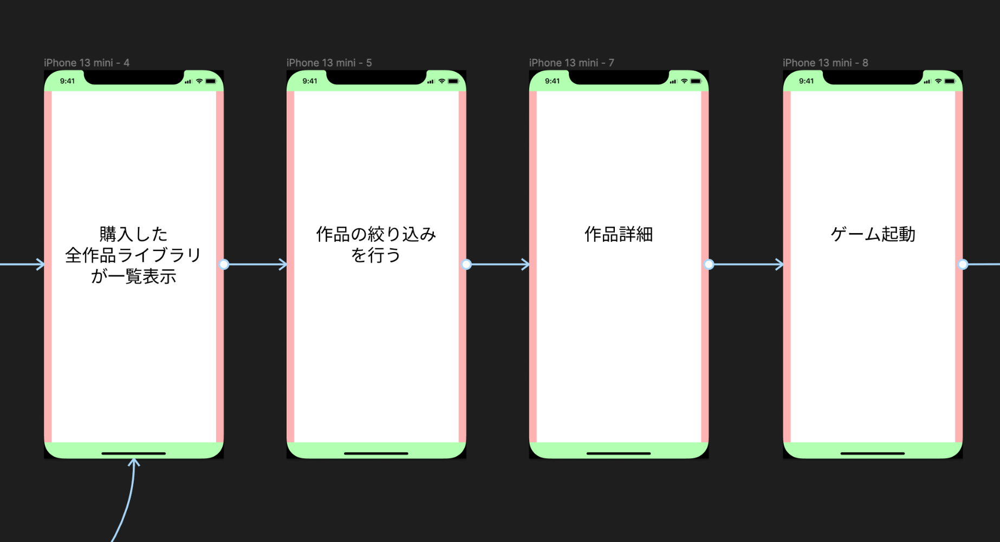画面遷移を端的に表したプロトタイプ
作業開始から20分ほどで、上の画像のような画面遷移と機能だけを表現したプロトタイプを作り、メンターの方に「こういったイメージであっていますか？」と見せフィードバックをもらいました。こうすることで共通認識を持つことができ、その後の作業の効率が大きく上がったと思います。
２時間に一度のペースでフィードバックをもらいながらUIを制作
的確なデザインをするために、多くフィードバックをもらうことを意識しながらワイヤーフレームの制作とUIのデザインをしました。
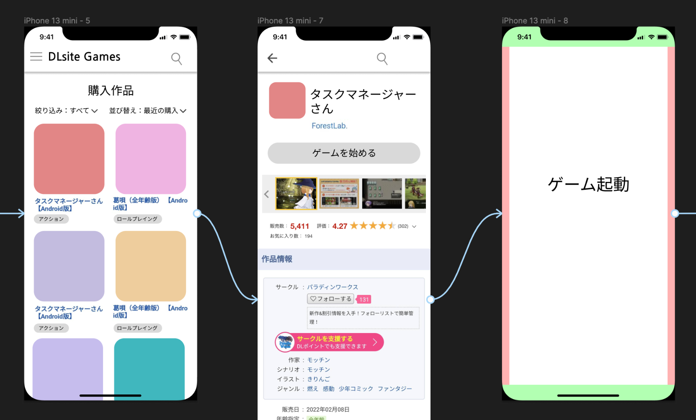初めに作ったワイヤーフレームの一部
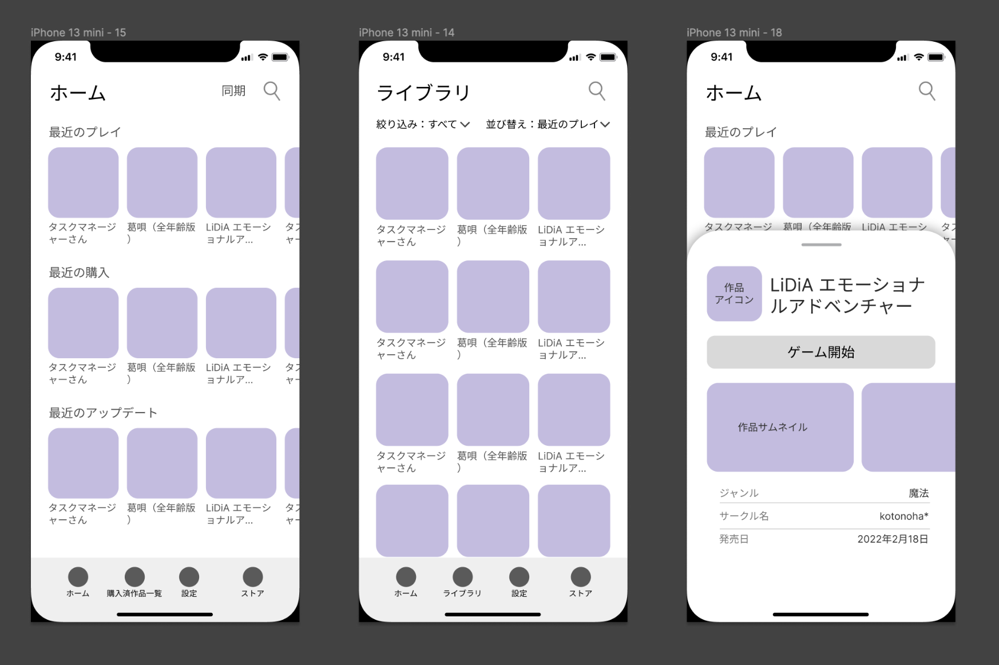最終的に作ったワイヤーフレームの一部
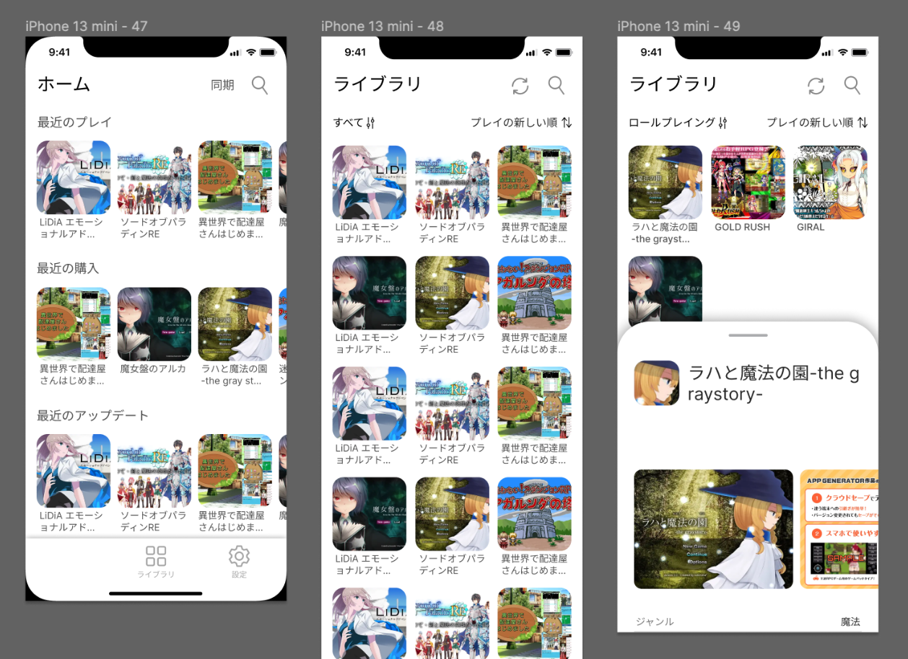始めに作ったUIの一部
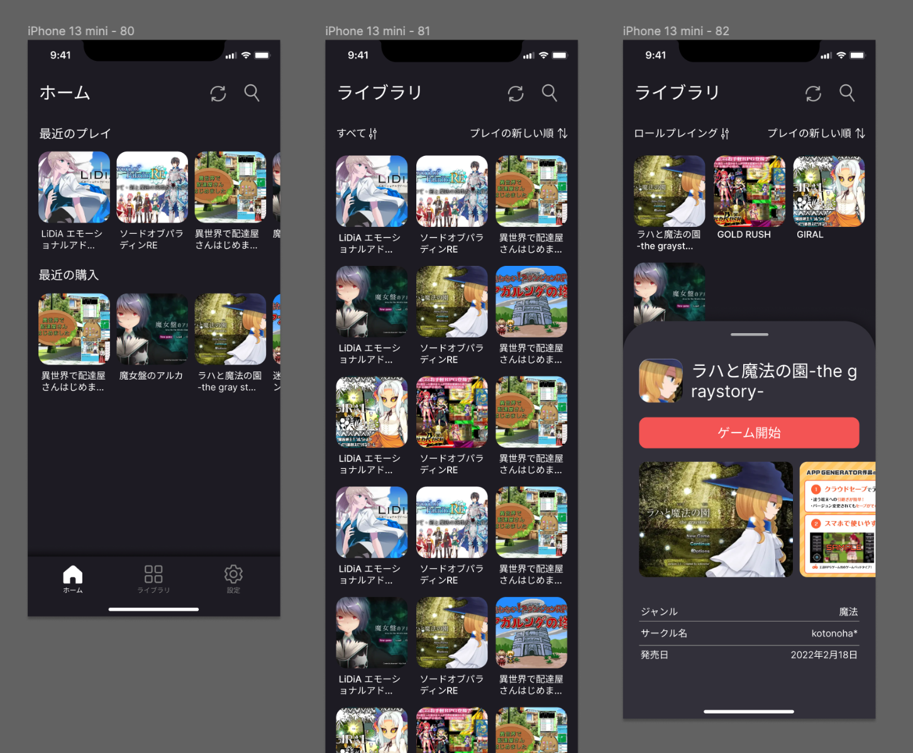最終的に作ったUIの一部
1時間30分でロゴをデザイン
スプラッシュ画面やログイン画面などをデザインする際にロゴがあった方がイメージがしやすいと思い、ロゴを制作することにしました。
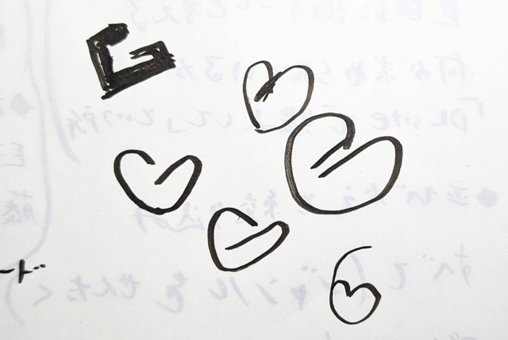ロゴのアイデアのスケッチ
Gamesの頭文字「G」をモチーフにしようと思いスケッチを書いたところハートの形を作れそうなことに気がつきました。ハートの形はペルソナの「世界観に心を奪われる」体験や「成人向けコンテンツ」を表現するのにピッタリだと思い、ハートの形のGをロゴにしようと考えました。
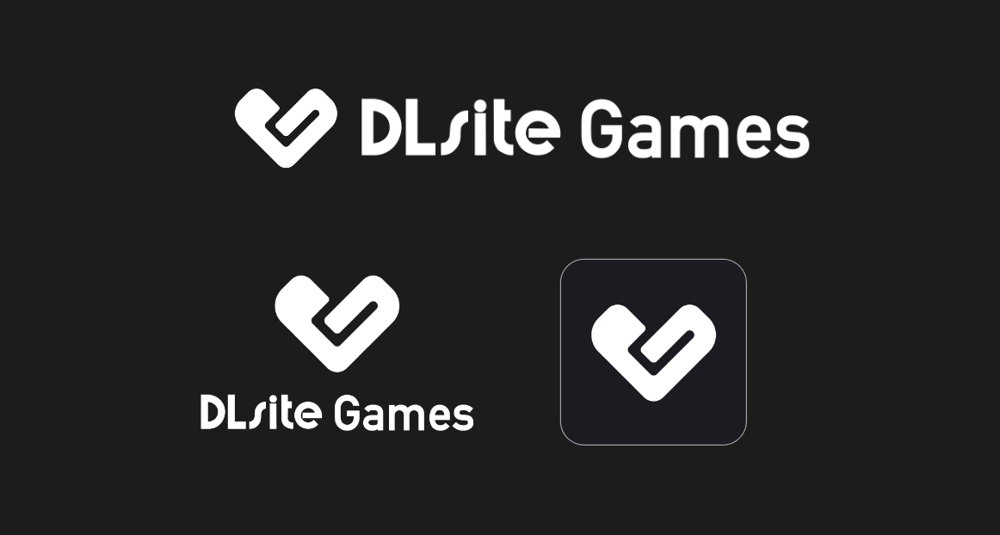そうして、上のようなロゴを制作しました。
ロゴには以下の３つの意味を込めました。
ロゴに込めた３つの意味
ホーム画面はユーザーの利用シーンを考えて設計
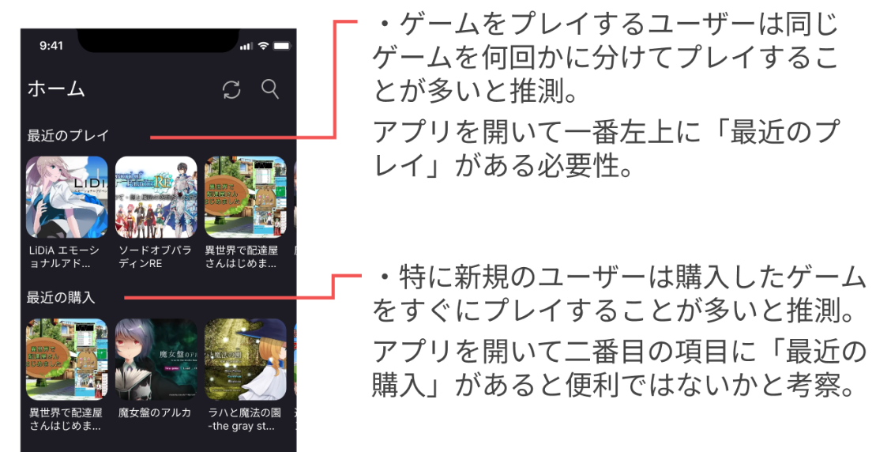ホーム画面の説明
背景をダークカラーにした２つの理由
今回はアプリの背景カラーをダークネイビーにしました。その理由は２つあります。
理由１：他社製品との差別化
「ゲーム詰め合わせアプリ」を調査したところ、白い背景のアプリが多いことに気づきました。しかし、今回のDLsiteGamesは成人向けのゲームを多く扱うこともあり、それらのアプリとは差別化を図り、背景カラーをダークカラーにした方が世界観の表現に最適であると考えました。
ゲーム詰め合わせアプリのUI調査
理由２：利用シーンの想定
・成人向けゲームをプレイする時間帯は夜が多いと推測しました。
・ペルソナは世界観を大切にするためゲームに没頭してプレイすると推測しました。
アクセントカラーを少しピンクがかった赤色にした理由
姉妹アプリのDLsite Sound は癒しや没頭をテーマに紫をベースカラーにしていました。それに比べてDLsite Gamesは刺激的でポップなカラーを選択しようと考えました。
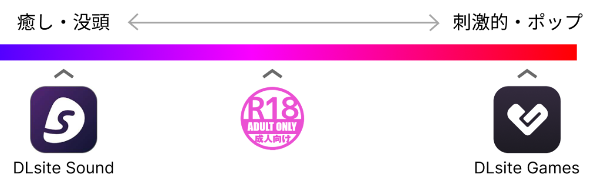アクセントカラーの図
コンセプトフレーズを作ることでデザインの意図を分かりやすくした
アプリのカラーリングやロゴなどのデザインの意図を一言で表現するコンセプトフレーズを作ってみました。ズバリ「心を奪われる刺激的なゲーム体験を」というものです。
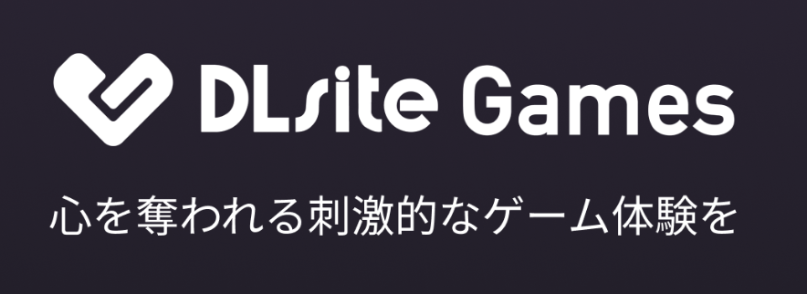コンセプトフレーズ
学び１：押させたいボタンにアクセントカラーを使う
今回のインターンを通じて得た印象的な学びの一つに「アクセントカラー（赤色）は押させたいボタンに使う」という考え方があります。設定画面を例にしてお話しします。
初め私は、設定画面を下の画像のようにデザインしました。
設定画面のデザイン：before
これをメンターの方に見てもらったところ、「あたかもログアウトを押させたいかのように見える」と指摘をいただきました。そこで下の画像のようにデザインを修正しました。
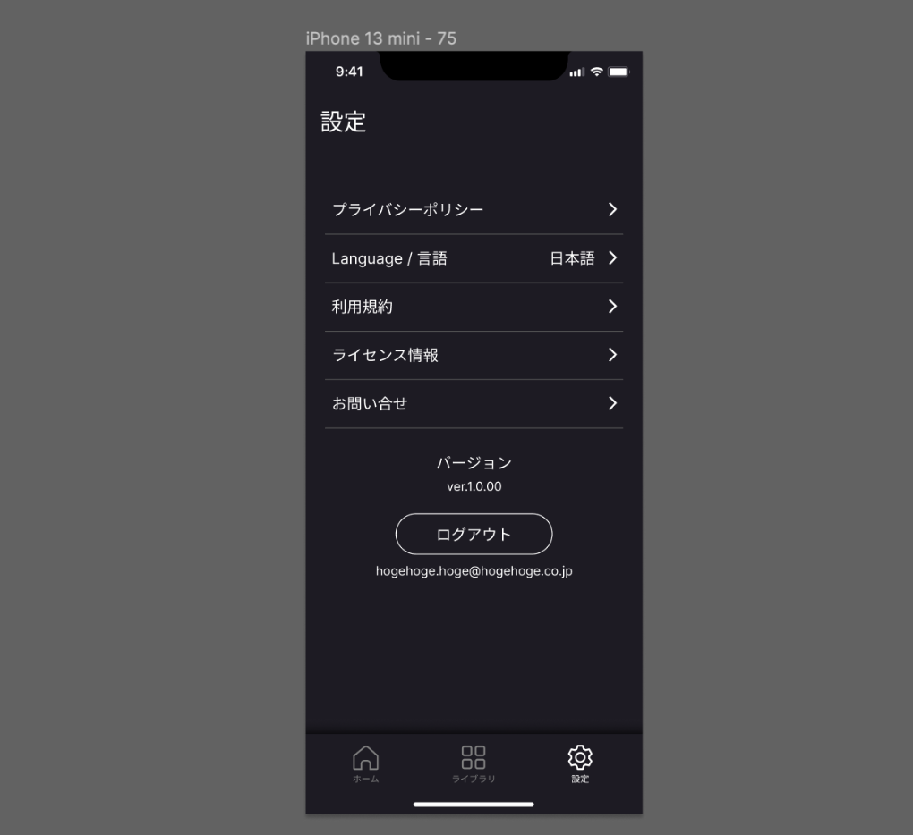設定画面のデザイン：after
デザイン性だけを見るとbeforeのアクセントカラーが入った画面の方が良いように感じますが、ユーザーの使い勝手や感情（ユーザビリティ）を考えると確かにafterの方が理にかなっていると思いました。このようにデザイン性と機能性をしっかりと調和させることがUIUXデザイナーの腕の見せ所なんだという学びがありました。
学び２：対話（壁打ち）による暗黙知のインプットが重要
二つ目の学びは、新しい組織に入った時にどうすれば効率的に彼らの感覚を習得できるのかについてのものです。例えば今回の課題の場合はメンターの方達の頭の中に「こういう感じのアプリをデザインして欲しい」という言葉にはしにくい暗黙的なイメージがあったはずです。それらのイメージをどのようにすれば汲み取れるのかを私はインターンの間考えていました。結果としては、「対話」が重要であると改めて感じました。対話の内容ももちろん大事ですが、相手の表情や声色などから彼らが持っている暗黙知を自分の頭の中にインストールしていく感覚がありました。今後も新しい人と新しい制作を行う際にはより対話を大切にしたいと思いました。